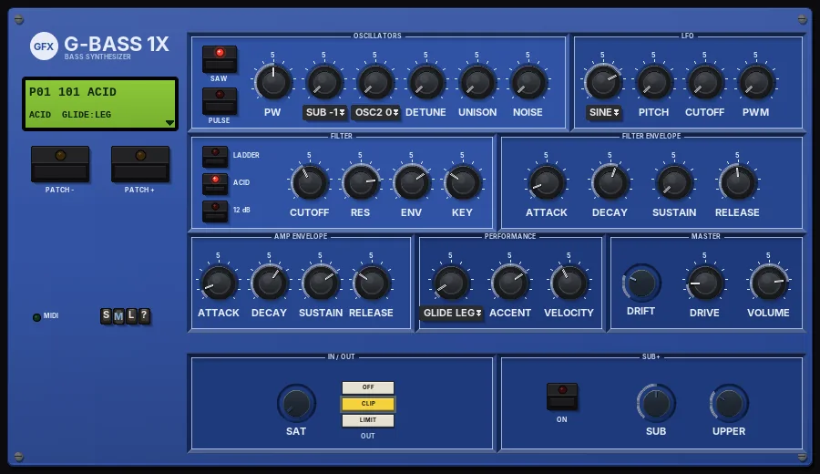
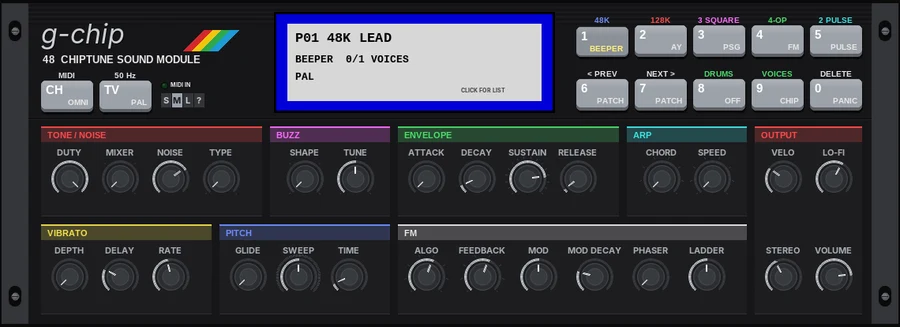
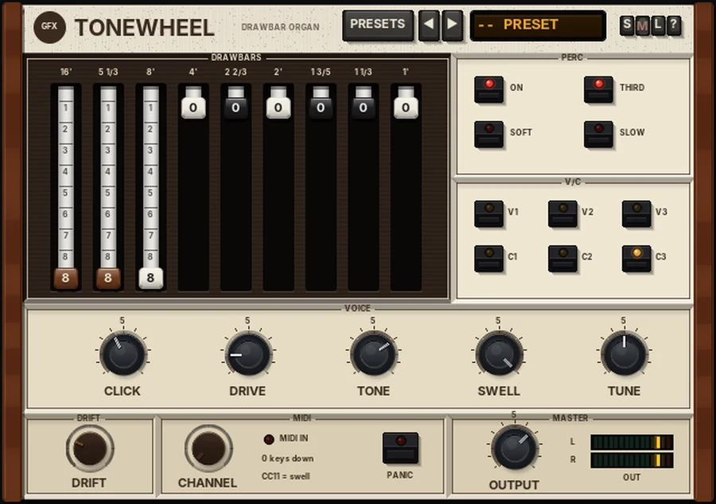
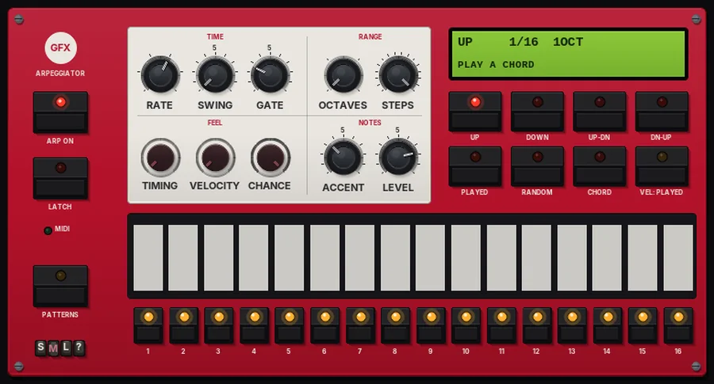
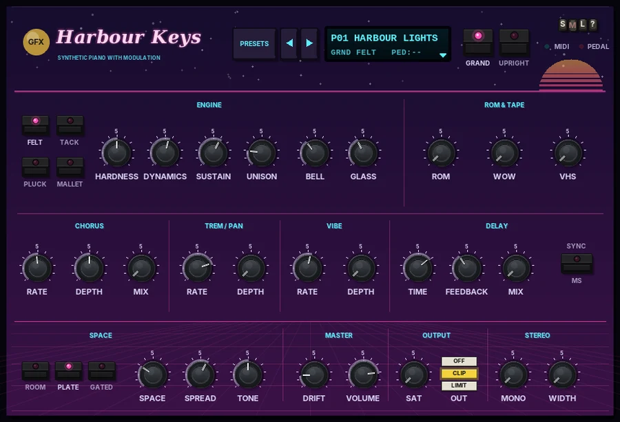
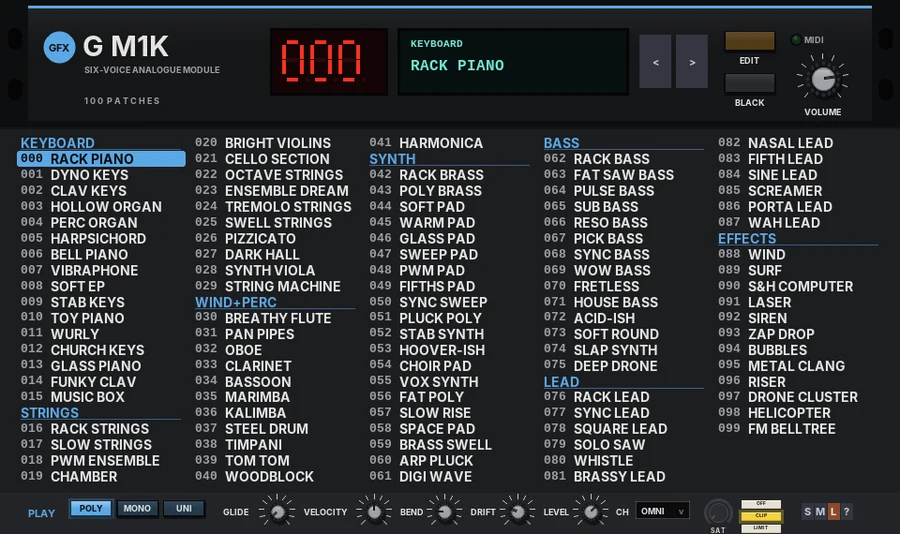
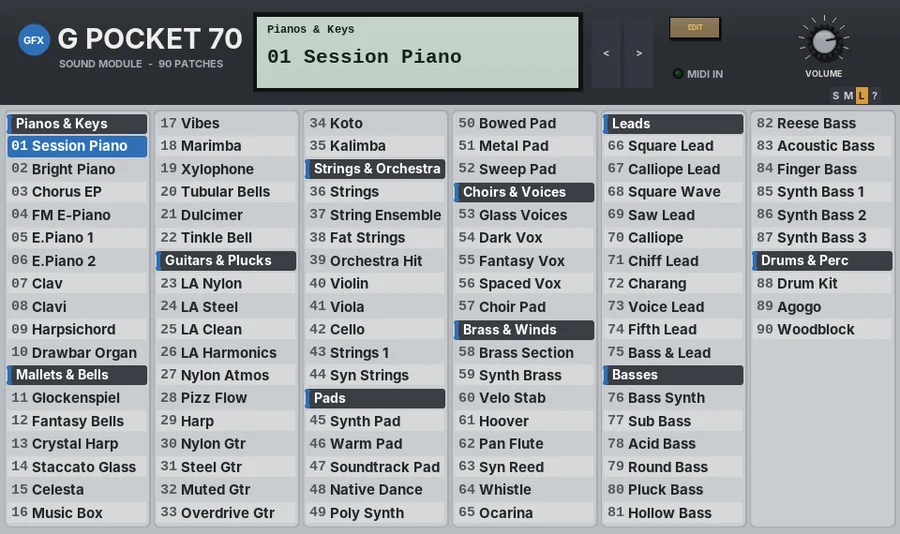

Instruments at a glance
Synths, organs, pianos and string machines. Every sound is synthesised - nothing to load. Click a plug-in for its panel; each one has its manual PDF and a download.
| Plug-in | In the spirit of | Main features | Best for |
|---|---|---|---|
 G Lab80Panel G Lab80Panel | Late-80s digital workstation |
| Quick, characterful keys and pads |
 G Lead 8Panel G Lead 8Panel | 80s analogue polysynth |
| Leads, chords and arpeggios |
 G Bass 1XPanel | Classic monosynth basses |
| Bass lines from warm to acid |
 G CosmosPanel G CosmosPanel | 80s eight-voice polys |
| Lush pads and strings |
 G GlowPanel G GlowPanel | Early-80s micro-computer additive synths |
| Glassy digital tones and bells |
 G Chip 48Panel | 8-bit home computer and console sound chips |
| Chiptune and retro game sounds |
 G Voce 90Panel G Voce 90Panel | 90s half-rack electric piano modules |
| Electric pianos with movement |
 G EnsemblePanel G EnsemblePanel | 70s divide-down string machines |
| Classic string-machine beds |
 G TonewheelPanel | Tonewheel drawbar organs |
| Organ parts (pair with Rotary) |
 G ArpPanel | Hardware arpeggiators and step sequencers |
| Driving any synth with arpeggios |
 G Harbour KeysPanel | Early-90s ROM pianos |
| House and 90s pop pianos |
 G M1KPanel | Late-80s matrix-modulation rack synths |
| Analogue pads, basses and brass |
 G MalletsPanel G MalletsPanel | Mallet instruments |
| Marimba, vibes and bells |
 G Pocket 70Panel | Late-90s sound modules |
| Quick sounds while writing |
 G RainbowPanel G RainbowPanel | 60s modified-organ and tape-loop drones |
| Drones and minimalist loops |